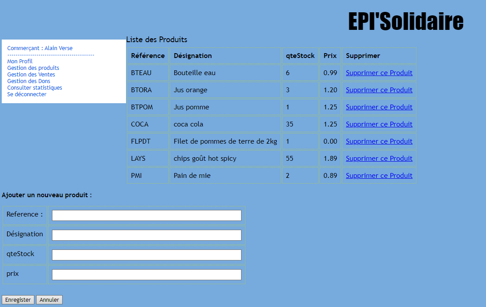

Période : 1 mois(environ)
Langages utilisés : HTML/CSS/PHP
Travail : En groupe de deux
Introduction : Le projet EPI’Solidaire vise à développer une application web destinée à faciliter la gestion d’une épicerie solidaire mise en place par la mairie, en collaboration avec des commerçants locaux. L'objectif est de répondre aux besoins des personnes en situation précaire, notamment les étudiants et les personnes âgées isolées.
Contexte : L’épicerie solidaire a été créée dans un contexte de solidarité sociale pour soutenir les habitants en difficulté. L'application doit permettre de suivre et gérer les dons, les ventes à prix réduits et l’état des stocks. Elle est conçue pour être utilisée par différents acteurs, dont les commerçants et acheteurs, avec des fonctionnalités spécifiques pour chaque rôle.
Objectif : On voudrait que le commerçant puisse enregistrer les ventes et dons, consulter ses propres ventes et dons et enfin consulter les statistiques. On voudrait que l’acheteur puisse consulter les produits afin de les acheter/commander en enfin suivre ses achats en ligne ou en magasin.
Illustration du menu pour un commerçant :
